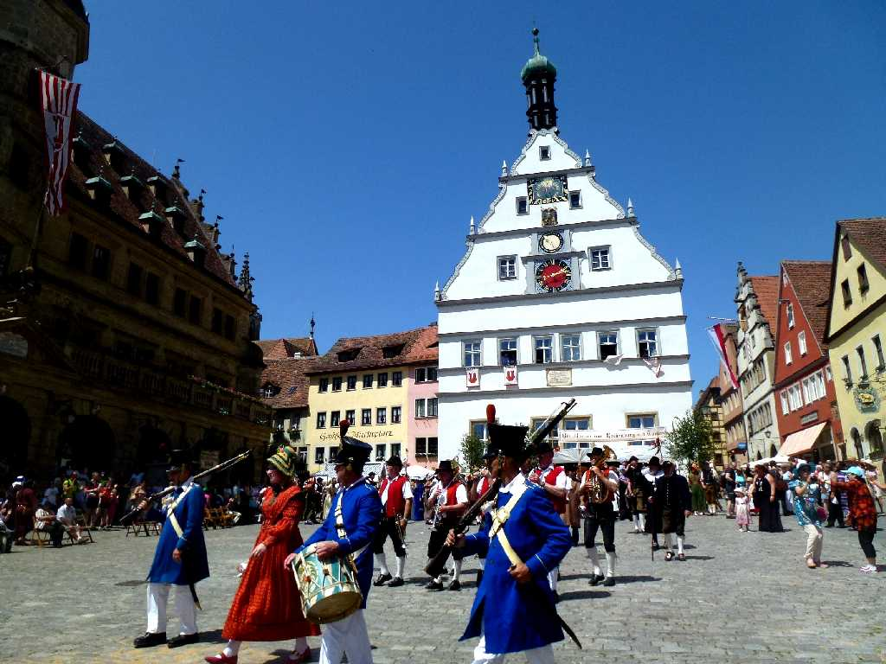
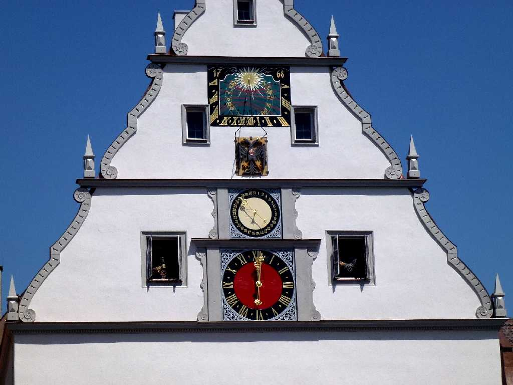
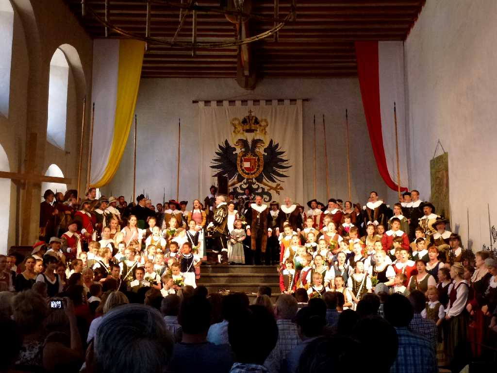
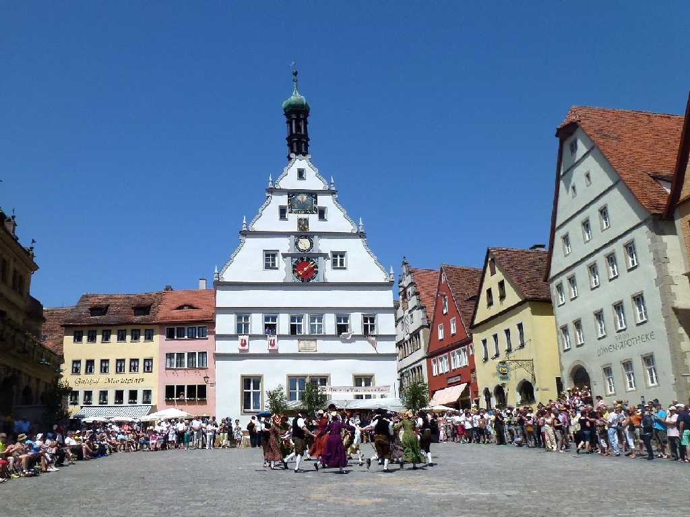
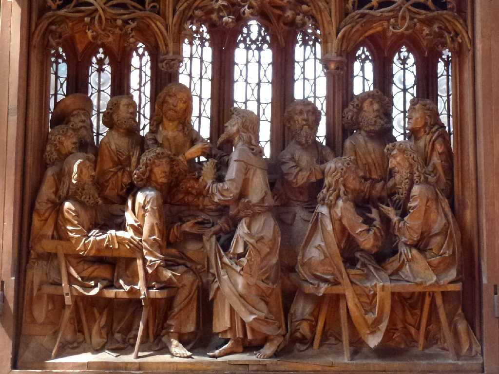

July 8 2014 Historisches Festspiel Rathaus Marktplatz Rothenburg
中世の宝石箱と云われるローテンブルクの歴史祭のパレード

Uhr Rathaus

July 8 2014 Theater Historisches Festspiel Rathaus
歴史祭に行われる三十年戦争の歴史劇を鑑賞

July 8 2014 Historisches Festspiel Rathaus Marktplatz
歴史祭の羊飼い達の踊り

1505 Heilig Blut Altar Jakobskirche
聖ヤコブ教会にある１５０５年に創られた聖血の祭壇の最後の晩餐